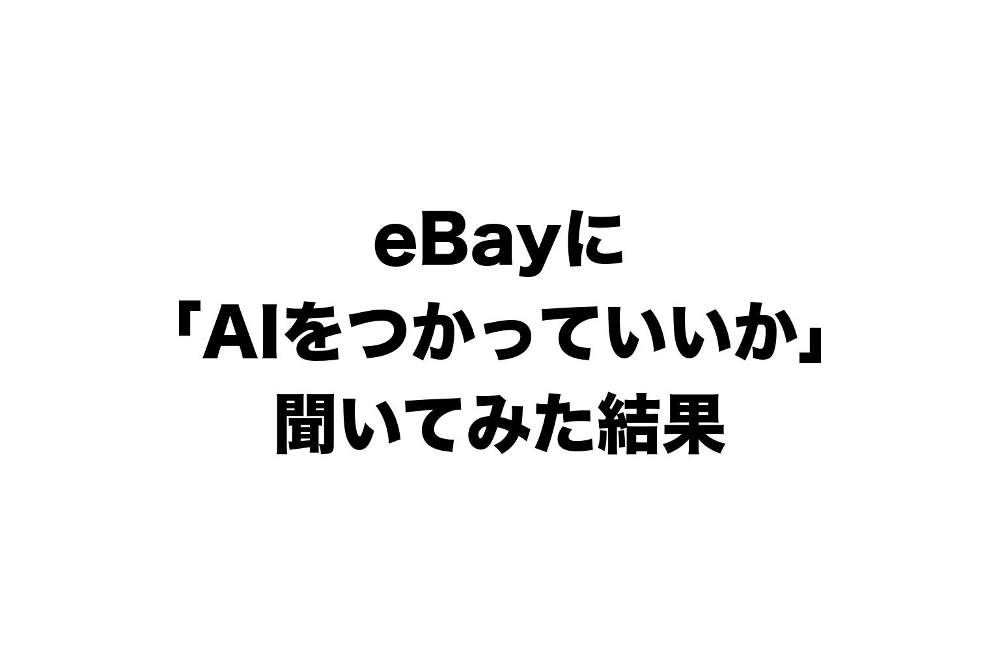

eBayに、「AIを使っていいですか」と聞いてみました。
送ったのは9月26日。
10月1日に答えが来て、追加で聞いたことにも10月2日に答えてもらいました。
出典: eBay Japan(eBay Customer Service セラービジネスケア)からの回答メール(2026年10月1日)。担当者名・問い合わせ番号・ストアのIDは伏せています
出典: eBay Japan(eBay Customer Service セラービジネスケア)からの回答メール(2026年10月2日)。担当者名・問い合わせ番号・ストアのIDは伏せています
先に結論を書きます。
答えは「AIならOK」「AIならNG」ではありませんでした。
見られていたのは、AIかどうかではなく、この3つです。
- eBayへのアクセスのしかた
- 取ったデータの使い方
- AIに渡す情報の中身
この記事では、返ってきた答えを3つに分けて、自分の言葉で書きます。
最後に、そのまま使える「OK/NGチェックリスト7つ」をつけました🐹
聞いたきっかけ: 規約に「LLM-driven bots」と書いてあった
eBayの利用規約(User Agreement)の第3条に、こういう一文があります。
use any robot, spider, scraper, data mining tools, data gathering and extraction tools, or other automated means (including, without limitation buy-for-me agents, LLM-driven bots …) to access our Services for any purpose, except with the prior express permission of eBay;
ざっくり言うと、「ロボットやスクレイパー、LLMで動くボットなどでeBayにアクセスするのは、eBayの事前の許可がないかぎりダメ」です。
LLMは、ChatGPTやClaudeのような、文章を読み書きするAIのことです。
出典: eBay Japan(eBay Customer Service セラービジネスケア)からの回答メール(2026年10月1日)。担当者名・問い合わせ番号・ストアのIDは伏せています
ぼくも、他店の売れ行きを調べるのに、AIにブラウザで「売れた商品」の画面を見てもらっていました。
このままでいいのか、はっきりさせたかったんです。
そこで、可否を聞くのではなく、許可をお願いする形で問い合わせました。
条件もつけました。
- 見るだけ。購入・入札・メッセージはしない
- 1日50ページまで。ページの間は数秒あける
- 集めたデータは社外に出さず、30日で消す
売れた実績のデータは、本当はAPIで取りたいんです。
でも、そのためのAPI(Marketplace Insights API)は2回申請して、2回とも「承認されたパートナーだけ」で通りませんでした。
そのことも書き添えました。
① eBayへのアクセスのしかた → AIにブラウザを触らせるのはNG
1つ目は、いちばんはっきりした答えでした。
AIがブラウザでeBayの画面を見て集計するのは、許可されませんでした。
例えば、「売れた商品」の検索結果、Seller HubのProduct Research(Terapeak)、出品者の評価ページ。
見るだけ・ページ数を絞る・30日で消す、という条件をつけても、答えは変わりませんでした。
出典: eBay Japan(eBay Customer Service セラービジネスケア)からの回答メール(2026年10月1日)。担当者名・問い合わせ番号・ストアのIDは伏せています
追加で「では、許可を申請する窓口はありますか」と聞きました。
答えは、一般のセラー向けに案内できる窓口・手続きはない。
公式のAPIと、eBayの機能の範囲で使ってください、とのことでした。
「APIが使えないから、代わりにブラウザで」という理由も通りません。
APIが通らなかったことは、ブラウザで自動で見る理由にはならない、という答えでした。
一方で、OKだったこともあります。
人が自分でブラウザを開いて見た数字を、AIで集計するのはOK。
例えば、ぼくがTerapeakを自分で開いて、数字を手で写して、その表をAIに渡して分析してもらう。
これは「AIによるeBayへの自動アクセス」には当たらない、という答えでした。
AIそのものは、eBayにアクセスしていないからです。
出典: eBay Japan(eBay Customer Service セラービジネスケア)からの回答メール(2026年10月2日)。担当者名・問い合わせ番号・ストアのIDは伏せています
線を引くのは、だれがeBayの画面を開いているかです。
② 取ったデータの使い方 → 他店のデータは「一律OK」ではない
2つ目は、APIで取ったデータの話です。
APIは、eBayとデータをやり取りするための公式の窓口です。
Browse APIやTrading APIで、出品の情報を取ること自体はできます。
ただし、取ったデータをどう使うか・どれだけ保存するかには、API利用の規約(API License Agreement)と、APIごとの条件がかかります。
市場の動き・価格の戦略・販売数・利用者の行動、といったデータには、追加の制限がある場合もあるそうです。
例えば、こういう使い方。
ほかのお店の価格・売れた数・終了したかどうかを、APIで定期的に取って保存し、自分の店の値付けや仕入れに使う。
これは「公式APIだから、一律に問題ない」とは言えない、という答えでした。
保存していい期間も、一律には案内できないそうです。
公式APIを使っていれば何でもOK、ではないんです。
うちの店は、ほかのお店の出品価格をAPIで取って、値付けの参考にする仕組みを続けています。
ただ、「一律OK」ではないと言われたので、API利用の規約と各APIの条件を確かめたうえで、自己責任で使っています。
取ったデータは、使い終わったら消して、保存は最小限にしています。
③ AIに渡す情報の中身 → 買い手を特定できる情報は渡さない
3つ目は、AIに何を渡すかです。
まず、公式API×AIのつなぎ方そのものは、問題ないという答えでした。
- AIが書いたタイトル・説明文・Item specificsを、APIで出品・更新する
- AIの判断で、価格やBest Offerの自動承諾額を、APIで変える
- AIで写真の明るさを直す
ただし、どれも正確かどうか・ポリシーに合っているかは、セラーの責任です。
AIが書いた説明が間違っていたら、それはぼくの間違いです。
写真も、実物と違う状態に見せる加工はダメです。
出典: eBay Japan(eBay Customer Service セラービジネスケア)からの回答メール(2026年10月1日)。担当者名・問い合わせ番号・ストアのIDは伏せています
いちばん大事なのは、お客さんへの返信です。
AIで返信の文面を作って、APIで送る。
このつなぎ方はできます。
でも、APIで取った買い手の個人情報を、AIに渡すのは認められない、という答えでした。
そこで、もう一歩聞きました。
「名前・住所・メール・電話・注文番号などを、AIに渡す前にプログラムで伏せ字にして、質問の中身と商品の情報だけを渡す。これならどうですか」
答えは、考え方には沿っている。
ただし、伏せ字にするだけでは足りない。
本文の中に書かれた情報も含めて、買い手を直接・間接に特定できる情報が、AIに渡らないようにすること。
そのうえで、翻訳や返信の文案にAIを使うのはOK、とのことでした。
出典: eBay Japan(eBay Customer Service セラービジネスケア)からの回答メール(2026年10月2日)。担当者名・問い合わせ番号・ストアのIDは伏せています
例えば、本文の最後の「John Smith, Texas」のような署名。
「I'm a mechanic from Ohio」のような自己紹介。
名前そのものではなくても、人をしぼりこめる情報です。
ここまで伏せてから、AIに渡します。
伏せ字の作り方は、AIに渡せるプロンプトつきで、こちらに書きました。
▼【プロンプト付き】eBayの返信をAIに任せる5ステップ

うちの店でやったこと3つ
答えを受けて、うちの店で実際にやったことです。
①AIに、eBayの画面を開かせるのをやめた
売れた商品・Terapeak・評価ページは、AIのブラウザで開きません。
売れ行きを見たいときは、人が画面を見て、数字だけAIに渡します。
他店のストアページをAIのブラウザで開く調べ方も、9月26日にやめました。
(他店のデータをAPIで集める使い方は、②に書いたとおり、自己責任で続けています。)
追加の質問も、問い合わせフォームではなく、答えのメールへの返信で送りました。
AIにフォームを操作させると、それ自体が自動アクセスに当たるかもしれないからです。
②買い手の情報を伏せてから、AIに渡すようにした
10月3日に、お客さん対応の仕組みを直しました。
AIに渡す直前に、名前・メール・住所・注文番号などを、[NAME_1]や[EMAIL_1]のような記号に変えます。
伏せたあとも個人情報らしいものが残っていたら、AIを呼ばずに人へ回します。
返信の宛名に、名前は戻しません。
AIの作業場所も、店のフォルダの外に移しました。
注文の台帳(買い手の名前や住所が入っている表)を、AIが開けないようにするためです。
AIに渡した文は、ぜんぶ記録に残しています。
10月3日の夜から8日の朝までで263回。
どれも、伏せ字にしたあとの文です。
出典: ぼくの店のAIの記録ファイルを集計(2026年10月8日 5時時点)。文の中身は載せていません
自動の返信は、この形で続けています。
③出品・値付け・広告は、公式APIのまま続けている
ここは変えていません。
もともと、出品・値付け・Best Offer・広告の設定は、ぜんぶ公式APIでやっていました。
答えのとおり、正確さは自分の責任です。
持ち帰り用: eBayでAIを使うときのチェックリスト7つ
返ってきた答えを、チェックリストにしました。
新しくAIに仕事を任せるときに、上から順に当ててみてください。
OK(ただし、結果はセラーの責任)
- AIが書いたタイトル・説明文・Item specifics、AIが決めた価格やBest Offerの自動承諾額を、公式APIで反映する → OK。正確さは自分で確かめる
- AIで返信の文面を作って、APIで送る → OK。ただし買い手を特定できる情報は、本文の中のものも含めてAIに渡さない
- 人が自分の目で見たTerapeakや売れた商品の数字を、AIで集計・分析する → OK
- AIで写真の明るさを直す → 禁止されていない。実物と違う状態には見せない
NG
- AIにブラウザでeBayの画面を開かせて、見る・集める(売れた商品・Terapeak・評価ページなど) → NG。条件をつけてもダメ。一般のセラーが許可を申請する窓口もない
- APIで取った買い手の名前・住所・メール・電話・注文番号を、そのままAIに渡す → NG
要注意
- ほかのお店の価格・売れた数・終了状況を、APIで定期的に取って保存し、値付けや仕入れに使う → 「公式APIだから一律OK」とは言えない。API利用の規約と、各APIの条件を確かめる
迷ったら、AIに渡さない側に倒す。
それで困ることは、ほとんどありません。
まとめ: 見られているのは「AIかどうか」ではない
eBayの答えは、最後にこう結ばれていました。
AIを使うなら、AIを使うこと自体ではなく、次の3つごとに規約を確かめてください、と。
- eBayへのアクセスのしかた → AIにブラウザを触らせない。公式APIを使う
- 取ったデータの使い方 → 他店のデータの定期取得・保存は、一律OKではない
- AIに渡す情報の中身 → 買い手を特定できる情報は、本文の中のものも渡さない
うちの店は、eBay Japanに問い合わせて、書面でもらった答えに合わせて直しています(他店のデータは、規約を確かめたうえで自己責任で続けています)。
ただ、これはぼくの店の質問への窓口の案内で、すべての使い方にあてはまる答えではありません。
AIにどこまで任せるかは、eBayの規約を確認したうえで、自己責任でお願いします。
聞いてみて、よかったです。
「たぶん大丈夫」で動かしていた部分に、はっきり線が引けました。
聞く。直す。続ける。
AIに任せる仕事は、このあとも増やしていきます🐹
あなたの店のAI、eBayの画面を開いていませんか?
▼中の人🏠(レンタルスペース23部屋・売上1.5億)のレンスペ実録

▼ブログ(eBay×レンスペ、全記事まとめ)

▼この店のやり方は、ぜんぶ1冊にまとめてあります
リサーチ・出品・値付け・顧客対応まで、初月利益10万4,286円を出した実店舗の記録と手順を全部書いた教科書です。
読んだその日から、AI社員の作り方をそのまま真似できます。
『AI × eBay輸出の教科書 — 梱包以外、ぜんぶAI』


販売価格は3部売れるごとに2,000円ずつ値上がりします（上限あり）。内容・最新価格は販売ページをご確認ください。